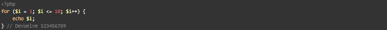

For
Los loops for son los más complejos en PHP.
Ejemplo

Las expresiones o conjunto de expresiones van separadas por punto y coma ; y sólo hay 3.
La primera expresión, $i = 1, se ejecuta una vez incondicionalmente al comienzo del bucle.
La segunda expresión, $i <= 10, es una condición, si es true, se ejecutará la tercera expresión.
La tercera expresión, $i++, es la acción a realizar si se cumple la segunda expresión.